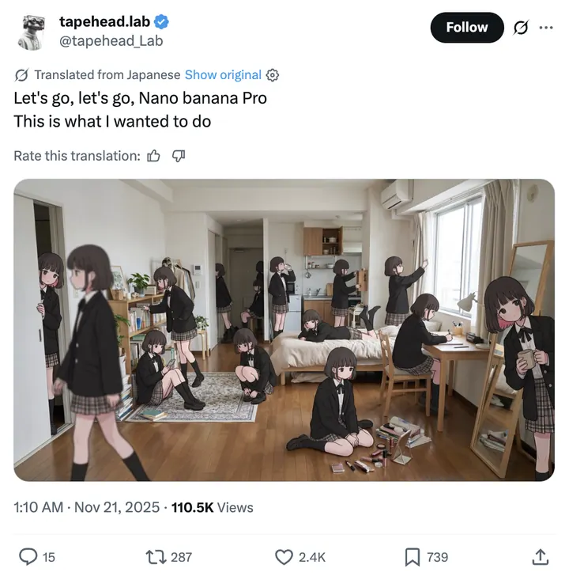

Nano Banana Pro

Retro CRT computer boot screen that resolves into ASCII-art of NYC's tallest building
Nano Banana Pro
Infographic
Infographic prompts for structured information design, educational cards, diagrams, comparison layouts, flowcharts, and AI visuals that need readable hierarchy.

Retro CRT computer boot screen that resolves into ASCII-art of NYC's tallest building

An adorable printable Christmas card design, aspect ratio 1:1.4. A cute, slow-moving sloth hangs upside down from a candy cane that stretches horizontally across the top of the card. The sloth is wearing a festive ugly Christmas sweater with a pixelated snowflake pattern. He is holding a star tree topper in his slow claws, trying to reach...

A vintage Victorian Christmas card illustration in a beautiful chromolithograph style, printable and exquisite, aspect ratio 1:1.4. The charming winter scene features two children and a snowman in a snowy garden. In the foreground, a child wearing a red polka-dot coat with a white fur-lined hood bends over a small wooden sled, tucking in...

A printable, exquisite Christmas greeting card design, presented in a frontal view with a 1:1.4 aspect ratio. The style is a beautiful, clean blend of minimalist watercolor and fine ink line art on a textured white watercolor paper background. A crisp white banner runs horizontally across the middle, neatly framed by a delicate, light-blu...

An exquisite, printable vintage Christmas postcard illustration in a beautiful turn-of-the-century chromolithograph style. The image features a heartwarming scene of six adorable, fluffy kittens gathered around a large white ceramic bowl of milk on a soft, textured, warm off-white background. One brown tabby kitten stands on the left. At...

A minimalist and modern Christmas greeting card design, presented in a flat, front-on view. In the center of the card, on a clean, solid white background, is a stylized Christmas tree. The tree is created using a pointillism technique, composed of small, colorful dots in a festive palette of red, sage green, and dark blue. The dots are ar...

A beautiful, printable watercolor greeting card illustration, aspect ratio 1:1.4. The scene features a heartwarming moment between a mother polar bear and her cub, sitting together on a bed of clean white snow that covers the bottom of the frame. The bears are rendered in a painterly style with visible brushstrokes, using shades of off-wh...

A whimsical and enchanting Christmas card illustration of a mother polar bear and her cub. They are standing on a small, light blue ice floe in the lower-left, gazing up in wonder at the magical night sky. The sky is a beautiful, painterly gradient of deep navy blue, vibrant turquoise, and a soft purple aurora borealis effect. It's filled...

A charming and humorous Christmas card design in a flat vector illustration style. The scene features three cute gingerbread men cookies standing in a horizontal row against a plain white background. From left to right: the first gingerbread cookie is a girl, smiling happily with an open mouth, decorated with two pink heart buttons and a...

An elegant and luxurious Christmas and New Year greeting card design, presented as a flat graphic, high resolution and perfect for printing. The design features a deep black background scattered with fine golden glitter dust and soft bokeh lights. Large, intricate snowflakes with a sparkling gold glitter texture cascade down from the top...

A printable, high-quality holiday greeting card design, aspect ratio 1:1.4. The card features a minimalist and humorous illustration on a solid white background. In the center is a cartoon gingerbread man, tilted diagonally as if he's fallen. He has a surprised expression with wide black dot eyes. A large bite is taken out of the side of...

A beautiful, printable Christmas card design, minimalist and charming, with an aspect ratio of 1:1.4. The background is a solid, soft, muted teal-blue color. At the bottom of the card, there's a watercolor illustration of two adorable baby penguins standing on a patch of white snow. The penguin on the right is wearing a small red Santa ha...

A beautiful, printable Christmas card design in a Scandinavian folk art style, featuring a symmetrical composition. Two stylized, elegant reindeer in a creamy off-white color face each other. Centered between their ornate antlers is a decorated Christmas tree. The entire design is set against a solid dark navy blue background. The scene i...

A beautiful, printable Christmas greeting card design, aspect ratio 1:1.4. The design features horizontal strings of festive lights against a solid deep navy blue background. The Christmas light bulbs have a charming watercolor texture in a palette of bright red, soft pink, and mint green. The strings are a delicate, looping, hand-drawn g...

A beautiful, printable Christmas card design with a 1:1.4 aspect ratio. The card features a solid deep navy blue background, creating a night-sky feel. It's decorated with a pattern of multiple horizontal, wavy strings of Christmas lights. The strings themselves are a delicate, thin gold line. The light bulbs have a charming watercolor te...

An exquisite, printable Christmas card design in a whimsical folk art style, gouache illustration. The design is perfectly symmetrical on a clean white background. In the center, two charming light-beige reindeer with grey antlers face each other nose-to-nose. They each wear a festive red harness or sweater with white striped patterns. Th...

An elegant and festive holiday greeting card design, presented in a flat, frontal view. The background is a rich, deep navy blue with subtle, darker blue tonal swirls creating a sense of depth. A beautiful arrangement of intricate snowflakes in shimmering silver glitter and polished metallic gold are scattered across the design. These ele...

An exquisite and elegant printable Christmas card design, front view, flat lay. The design is on a clean, minimalist white card background. The main feature is a modern wreath created from a thin, polished gold ring. A lush, dimensional papercraft arrangement of festive foliage is attached to the left curve of the ring. This layered compo...

A beautiful, printable Christmas card design in a classic vintage watercolor style, capturing a serene and peaceful winter night. The scene is viewed from a path, framed on the left by large, heavy, snow-laden evergreen branches. In the mid-ground, a snow-covered path leads past a rustic wooden gate towards a quaint village nestled amongs...

An exquisite, printable Christmas greeting card illustration of a peaceful woodland scene at night, in a classic, detailed painterly style. The scene features a snow-covered landscape under a deep blue starry sky, with a large, brilliant eight-pointed star, the Star of Bethlehem, shining brightly in the upper left. A central, snow-laden e...

A charming and elegant watercolor illustration of a Christmas tree, perfect for a printable greeting card. The scene features a lush, green fir tree placed centrally in a simple golden pot. The tree is beautifully decorated with a delicate red ribbon that spirals gracefully around its branches. Adorning the tree are small, shiny red baubl...

An exquisite and printable Christmas greeting card design, presented in a flat, front-on view, aspect ratio 1:1.4. The artwork features a single, large, and highly detailed watercolor snowflake as the central focus. It is painted with delicate washes of indigo, royal blue, and lighter cerulean blue, showcasing the beautiful transparency a...

An exquisite, printable Christmas card design with a modern, minimalist flat graphic style, aspect ratio 1:1.4. The design is set against a clean, solid white background. Across the top, five Christmas ornaments hang from thin black strings at varying heights. From left to right, the ornaments are: a large green bauble with sparkling silv...

A heartwarming and whimsical Christmas card cover, aspect ratio 1:1.4. A massive, fluffy white polar bear sits on the left, and a tiny, round penguin stands on the right against a clean, ice-blue background. They are connected by a comically long, oversized red and green knitted scarf that is wrapped multiple times around the bear's neck...
A good Infographic prompt names the subject, use case, visual style, composition, model constraints, and output goal clearly.
Start with the model examples on each card. GPT Image is useful for polished image generation, Seedream is useful for controlled design output, Gemini can handle structured visual instructions, and Seedance-style prompts help when motion or keyframes matter.
Check the source link and license context for each prompt before commercial use. Treat attributed social posts as references unless the source clearly allows reuse.